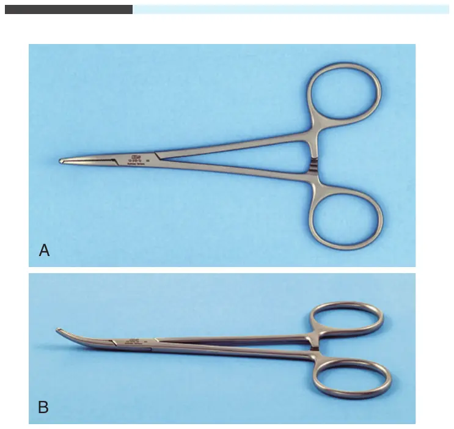
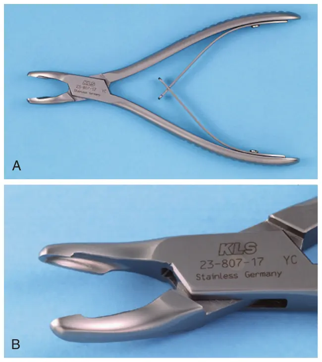

نسخه استخراجشده؛ ترجمه یا تأیید علمی انجام نشده است. وضعیت: captured
برای بیشتر جراحی دنتوآلوئولار، فشار روی زخم برای بند آمدن خون کافی است. وقتی نبود، سراغ هموستات میروی: نوکهای بلند و ظریف برای گرفتن بافت، بهعلاوهی دستهی قفلشونده. قفل یعنی میتوانی روی رگ ببندی و ولش کنی یا به دست دستیار بدهی. پرکاربردترین نوع در جراحی، هموستات خمیده است.

کاربرد دومش در جراحی دهان مهمتر است: برداشتن بافت گرانولاسیون از ساکت، و برداشتن نوک ریشه، جرم، آمالگام و هر ذرهی کوچکی که داخل زخم افتاده.
هموستات هرگز برای بخیه زدن به کار نمیرود. سطح فکهایش شیارهای موازی دارد نه شبکهی متقاطع؛ کنترل روی سوزن و نخ کم میشود.
رانژور پرکاربردترین ابزار برداشتن استخوان در جراحی دنتوآلوئولار است: تیغههای تیزی که با فشردن دستهها استخوان را میبرند، بهعلاوهی مکانیسم برگشتی که با رها کردن دست خودش باز میشود — پس بدون باز کردن دستی میتوانی پشتسرهم بگیری. دو طرح: فقط برش از کنار، و برش از کنار و از نوک (Blumenthal) که برای بیشتر کارهای دنتوآلوئولار عملیتر است، چون داخل ساکت میرود و استخوان بینریشهای و لبههای تیز را برمیدارد.
دو کاری که با رانژور نمیکنی: برداشتن حجم زیاد استخوان در یک گاز — بهجایش گازهای کوچک و پشتسرهم؛ و کشیدن دندان — ابزار را فوراً کند و خراب میکند و چون برای نگه داشتن محکمِ دندان طراحی نشده، خطر افتادن دندان در گلوی بیمار دارد. رانژور گران است؛ تیز و سالم نگهش دار.
راه اصلی برداشتن استخوان در کشیدن جراحی، بور در هندپیس است. هندپیس سرعت متوسط و گشتاور بالا با بور کارباید تیز. بورهای رایج: فیشور ۵۵۷ یا ۷۰۳ و راند شمارهی ۸. برای حجم زیاد (مثل کاهش توروس) بور استخوانی بزرگ شبیه بور آکریل.

خطرناکترین خطای انتخاب ابزار در جراحی دهان: هندپیس جراحی نباید هوا را داخل میدان عمل خروج دهد — پس توربین هوای پرسرعت ترمیمی ممنوع است. هوای خروجی به لایههای عمقی بافت رانده میشود و آمفیزم بافتی میسازد. و هندپیس جراحی باید کاملاً قابل استریل باشد.
شستوشو اختیاری نیست. وقتی با بور استخوان برمیداری، جریان پیوستهی سالین یا آب استریل: بور را خنک میکند و از گرمای آسیبرسان به استخوان جلوگیری میکند، خردههای استخوان را از شیار بور میشوید و کاراییاش را بالا میبرد، و کمی هم روانکاری میکند. پیش از بخیه، کل میدان کاملاً شسته میشود — با سرنگ پلاستیکی بزرگ و سوزن ۱۸ گیج بلانت و زاویهدار.